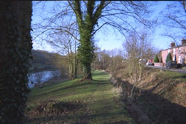

 The ditch to the right is the remains of the canal. Short inclines ran up and down the bank between the canal and the River Severn. They were self-acting in pairs, the descending loaded boat pulling up the unladen one.